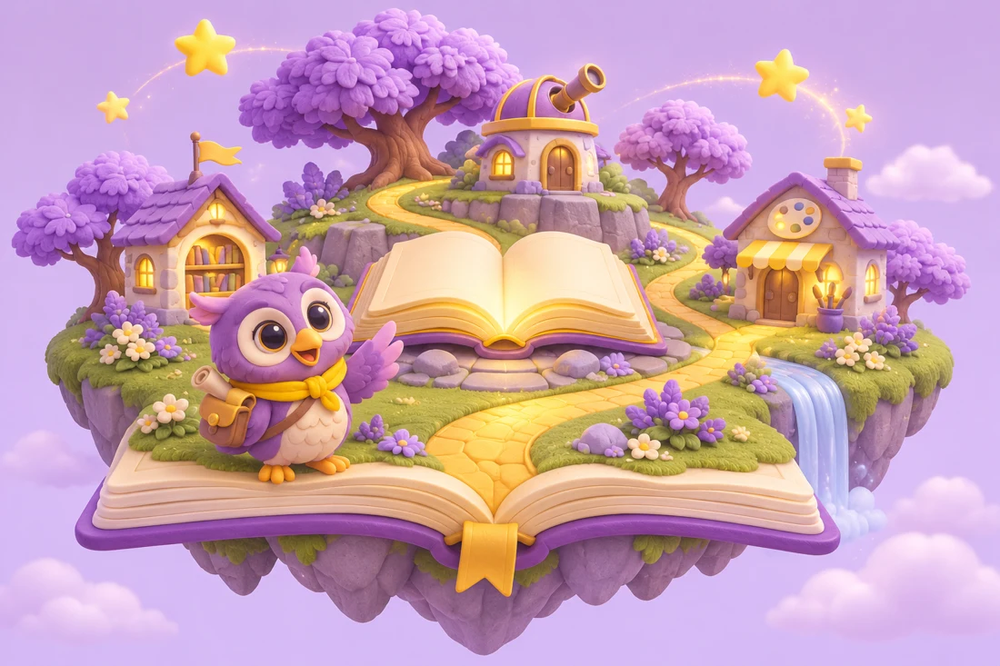

من كلمة واحدة إلى عالم من الكلمات! اقرأ الحكايات، وافتح أسرار الجموع، واجمع نجومك في كلّ محطة.

ابدأ بحكاية، ثم جرّب اللعبة. كلّ محاولة تعلّمك شيئًا جديدًا.
ثلاث حكايات، ولكلّ جمع سرّ!
اختر لكلّ كلمة سلّتها المناسبة.
تحدّيات تناسبك وترافق تقدّمك.
يميّز الطالب أنواع الجموع، ويحوّل المفرد إلى جمع مناسب، ويختار الصيغة الملائمة في جملة. تبدأ الجولة بالتصنيف؛ بعد إجابتين صحيحتين متتاليتين تظهر أسئلة تطبيقية. عند الخطأ يظهر تفسير، ثم تدريب داعم من النوع نفسه. يتبع ذلك تحدٍّ من ثلاثة أسئلة. يُحفظ آخر إنجاز على هذا المتصفح فقط.
اختر حكايتك، واضغط الكلمات الملوّنة لتكتشف سرّها.
لا يوجد مؤقّت؛ خذ وقتك في التفكير 🌱
اقرأ الكلمة ثم اختر نوع الجمع. جرّب حتى تصل إلى الإجابة الصحيحة.
خريطة الدرس في صفحة واحدة
الجمع: ما دلّ على ثلاثة فأكثر